Rollen
[TITTEL] hos [LEVERANDØR] – faste besøk hos de samme menneskene, i [OMRÅDE]. Jobben er de små tingene som lar folk bli boende hjemme: selskap, lett hjelp i huset, hjelp med telefonen, en handlepose båret inn.
Tallene
| Stillingsprosent | [%] |
| Timelønn | [KR] |
| Tillegg kveld/helg | [KR/%] |
| Startdato | [DATO] |
| Prøvetid | [MND] – enkle dagtidsoppdrag først |
| Pensjon og forsikring | [ORDNING] |
Alt over kommer også skriftlig – dette er samme tall som i tilbudsbrevet, ikke en forhandlingsversjon.
Hvorfor deg
[ÉN KONKRET OBSERVASJON FRA INTERVJU ELLER REFERANSE – skriv den ferdig før samtalen. En mal-kompliment høres ut som en mal-kompliment.]
Spørsmålene dine er velkomne – og du trenger ikke svare i dag.